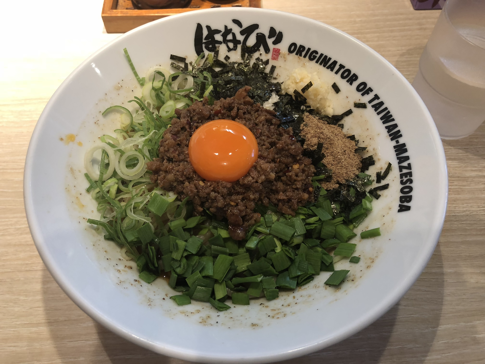
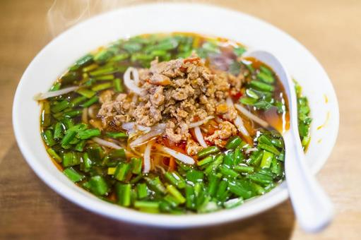

台湾まぜそばとは
極太麺の上に、基本的に台湾ミンチ（唐辛子とニンニクを効かせたピリ辛ミンチ）、生の刻んだニラ・ネギ、海苔、魚粉、卵黄、おろしニンニクがのった汁無し麺のこと。

スープがない台湾まぜそばには通常の麺を使用すると具が絡まりずらい為、湯切りをせずに麺棒でかきまぜ麺に傷をつけて粘りを出し、味わいをまろやかにして、タレとも絡みやすくしている。
発祥は台湾ではなく、愛知県名古屋市の麺屋はなび高畑本店。
台湾ラーメンとはまた違う食べ物。ちなみに台湾ラーメンも名古屋発祥。

なぜ台湾か
1970年に名古屋の台湾料理店が、台湾料理の担仔麺(たんつーめん)を元に作ったのが台湾ラーメンで、創業者の方が台湾人だったことからそのまま「台湾ラーメン」と名付けた。この台湾ラーメンを元に、試行錯誤を繰り返して2009年に作られたのが台湾まぜそば。